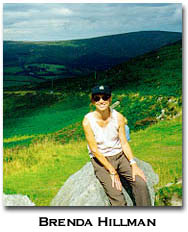

Energizing
the Reading Process:
Juliana Spahr's New Nest
by Brenda Hillman
Lately it has seemed doubly impressive to see young women poets writing in inventive forms even as they join the conversation called Literary Criticism.
In structures that comprise a kind of synaesthesia of genres, crossing sensuously over, mixing purely poetic enterprise with analytic writing, they work against expectation with a detached curiosity that brings fresh sanity from dreamed forms.
In her perceptively iconoclastic chapbook, Spiderwasp or Literary Criticism (Spectacular Books, 1998) Juliana Spahr demonstrates what she admires, summoning irreverent metaphors and spatially inventive shapes to re-consider certain literary texts as acts of joining and received histories.
Expressing impatience with clear-cut aesthetic categories (Language poetry, beat generation, New York school) and eager to energize the reading process in light of what has happened, she makes subtle analogies between reading, writing, being fed, being fed upon, between critics and predators, poets and prey, critics and prey, poets and predators.
The metaphor of the spiderwasp is brilliant precisely because it reexamines the terms of metaphor and belief in metaphor while using metaphor.
Her analogies aren't strict alignments and do not give way to more drastic separatism.
On the right side of the booklet, Spahr makes a rational account of specific texts by women that interest her, positing that their relation to the literary moments that precede them is neither strict nor irrelevant.
On the left the broken story of a couple of insects: a pepsis wasp that must lay its eggs in the body of a tarantula.
Noting that literary movements often establish themselves by "divide and separate" moments Spahr recalls the importance of anthologies (Allen, 1960 and Silliman, 1986) and speeches (Grenier, 1971) and reads them as important for their time while acknowledging the tendency of discrete moments to "literalize the name avant-garde."
"These separations are partially true and partially false," she writes, as she calls into question all sorts of categories. Even he and she, right and left.
Spahr undertakes a passionate and compassionate examination of how moments of avant-garde literary history are reworked in a few texts by women: Lisa Jarnot's Sea Lyrics, Jena Osman's "The Periodic Table as Assembled by Dr. Zhivago, Occultist," and Joan Retallack's The Blue Stares.
On each left page of the chapbook (one thinks of the analog of having the "original language" from a translation on the left) the non-story/ story metaphor/non-metaphor unfolds of a spider and a wasp, a man and a woman, capitalist economy and a social life.
She sets three kinds of discourse side by side on the two pages: metaphoric prose poetry//critical analysis//footnote. The three forms can be read horizontally as individual languages, establishing their relationships across in a spatially vivid way.
In the main drama/metaphor on the left (the poem) the wasp waits to ambush and feed off a tarantula. Spahr keeps her tone steady as she describes this.
A subplot to this side plot is the drama of someone coming home "with spider bites" about to read and to confess to/as forms of betrayal. In this manner, she subverts the nest while showing the naturalness of nest itself. Italicized subtitles ("the story unfolds," "everything has flipped") give a clue to the portent of the drama in witty terms of nineteenth century melodrama. The couple has suffered some confusion in their relationship that is deeply personal and extends to their reading practices.
The drama is never clearly defined. The couple refuse to tell the story "straight" and the narrator does also, for to do so would be to participate in isolating falsehoods The only hope for them is in the fragmented, somewhat alienating telling that is not without beauty and not without grotesque amusement.
Neither complete fragment nor complete discontinuity is accurate. Only both are accurate.
Gender is important and unimportant in the account. Boundaries are questioned when the principal actors are called "he or she." Plot is made nervous by the widely spaced lines.
As Spahr extends her critical attention through the works of Jarnot, Osman, and Retallack, she develops the metaphor/story so that it is at once more gripping and more fractured.
Ownership, territoriality and the ideas of an "individual work" are called into question in Spahr's form of literary criticism, though she never denies the obvious truth that poetic practices emerge in context of other practices. She never claims that Jarnot, Osman, and Retallack exist as isolated forces, but she honors the unique bodies of their work.
She can implicate herself wittily as well, as critic as wasp re-visited-- while engaging in acts of poetic remaking.
The reader can choose to read all the left pages, all the right pages, some of each and both together. The eye is delightedly drawn both to the individual pieces Spahr illuminates-- Osman, Jarnot and Retallack's-- and to this synthesizing action that makes of reviewing other texts and poetic criticism a new animal.
BIO: Brenda Hillman has published two chapbooks, the most recent of which is Autumn Sojourn (Em Press, 1995) and five books (all from Wesleyan University Press) most recently Loose Sugar (1997). She teaches at Saint Mary's College in Moraga, California.